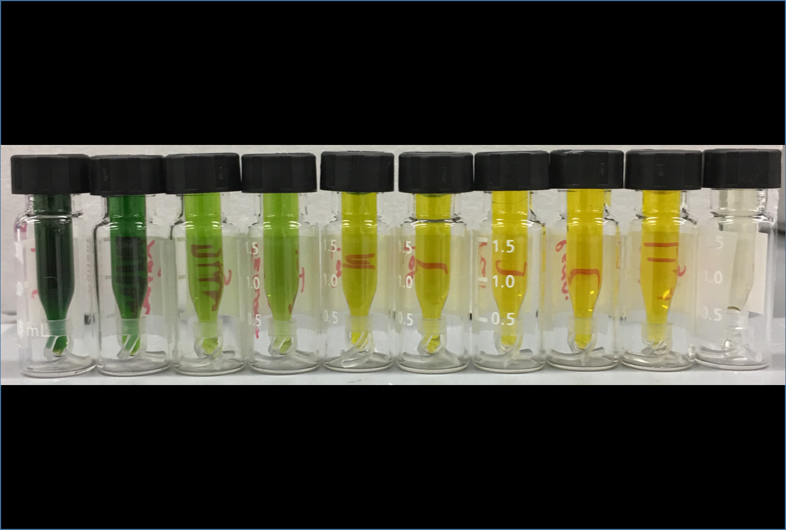
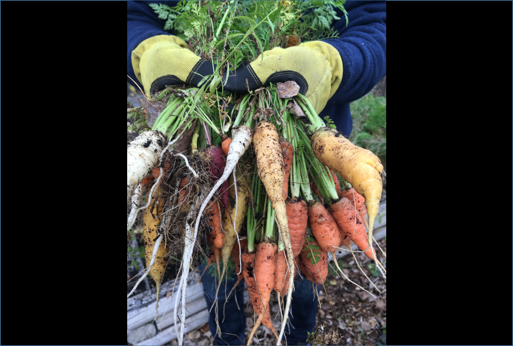
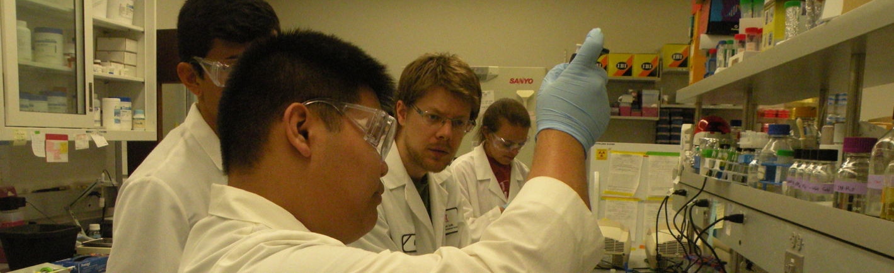

Flowers displaying the lotus effect

Metabolite samples from diverse plant tissues for GC analysis (photo: collaborator E. W. LaBrant)

Moss growing in under LED lights (photo: collaborator Jessica Budke / jmbudke.github.io)

Diverse carrots for a genetic diversity panel

Working with high school students visiting the Cahoon lab (photo: Rebecca Cahoon)

Diverse Apiaceae species for a metabolic diversity panel